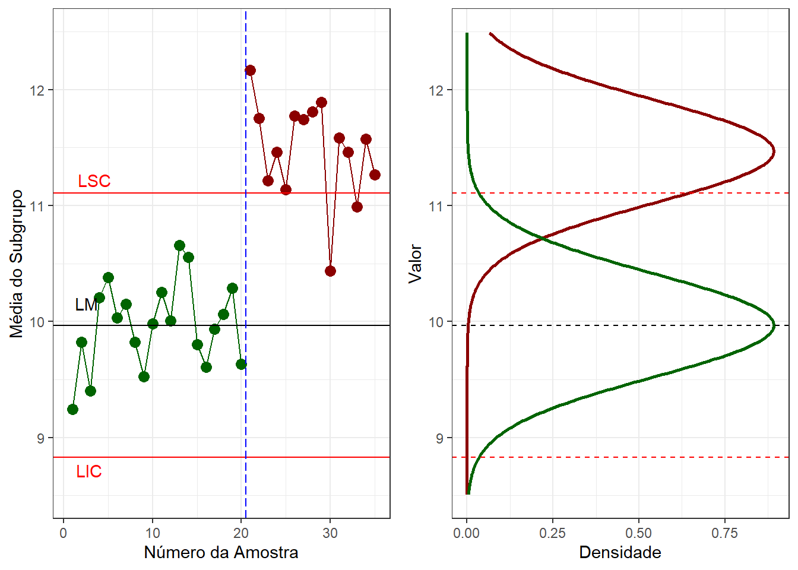
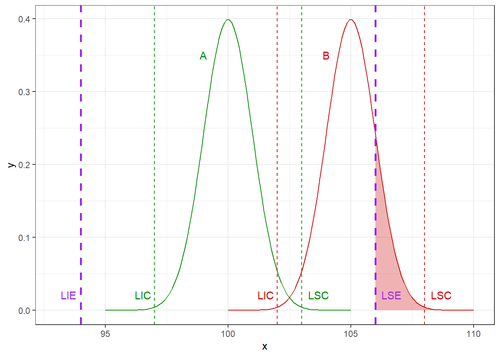
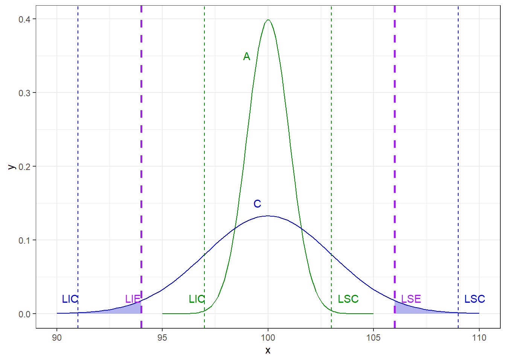

Cartas de controle para variáveis
Introdução
Uma característica de qualidade medida em escala contínua é chamada de variável. Por exemplo, volume, dimensão, temperatura, pressão, rugosidade, entre outras. Para controle estatístico de variáveis geralmente são usadas duas cartas, uma para a média do processo e outra para a dispersão deste. Enquanto a carta para média visa monitorar causas especiais de variação, a carta para dispersão é usada para monitorar causas comuns de variação.
A carta x-barra ou \(\overline x\) é a carta usada para monitorar a média do processo. Já a dispersão pode ser monitorada a partir da carta de amplitude, \(R\), ou da carta de desvio-padrão, \(s\), ou ainda a da variância \(s^2\). Entretanto, dada a facilidade de cálculo, há um século atrás quando as cartas foram desenvolvidas por Shewart, era mais fácil calcular a amplitude que o desvio-padrão, populariando o uso da carta \(R\) junto à carta \(\overline x\).
A seguir iustra-se uma carta x-barra com dois momentos distintos. Em um primeiro momento, considerando o horizonte de produção e controle relacionado às amostras 1 a 20, observa-se que o processo está estável, uma vez que as médias amostrais, plotadas em verde, estão dentro dos limites de controle. Posteriormente, das amostras 21 a 35, plotadas em vermelho, observa-se que houve um deslocamento considerável na média. Pode-se considerar que as amostras de 1 a 20 foram usadas para estimar os limites de controle, na primeira fase do monitoramento, enquanto as amostras 21 a 35 foram plotadas junto aos limites estimados anteriormente para controlar a produção futura. Possívelmente há uma causa especial ou atribuível de variação no processo. Observa-se ao lado os gráficos de densidade da distribuição normal representando a variabilidade e média dos processos antes e depois do deslocamento na média. Ao observar uma situação similar a esta pode-se usar de ferramentas de qualidade e de gerenciamento da mehoria de qualidade como DMAIC ou PDCA para identificar o problema, se possível antes de voltar à produção.
Os esquemas de controle tanto usando cartas \(\overline x\)/\(R\) ou \(\overline x\)/\(s\) é baseado em amostras, sendo os mais aplicados em sistemas de produção em lotes ou em massa de produtos discretos, uma vez que o custo de monitoramento de 100% da produção é alto. Tal esquema de controle por amostragem é baseado em subgrupos racionais. Cada subgrupo ou amostra é tomado em um instante de tempo no horizonte de produção. O conceito de subgrupo racional implica na seleção de amostras de modo que, se causas atribuíveis estiverem presentes, a chance de diferenças entre subgrupos será maximizada, enquanto a chance de diferenças devido a causas atribuíveis dentro de um subgrupo será minimizada. Ou seja, deve-se planejar o intervalo de tempo ideal para coleta de novas amostras, visando a garantia de que possíveis mudanças devido a causas atribuíveis não demorem a ser detectadas.
É importante também diferenciar limites de controle e limites de especificação, possibilitando o entendimento do que é variabilidade de processo e do que é capacidade de processo. Especificação consiste em limites relacionados ao projeto do produto, norma ou pedido do cliente. Ou seja, são limites que foram especificados para a variável sob controle e devem ser atendidos, de forma que o produto seja dito conforme. Já os limites de controle são calculados considerando a variabilidade do processo e servem para medir o seu desempenho. A Figura abaixo ilustra um caso onde uma característica de qualidade monitorada apresenta limites de especificação iguais a 94 e 106. Dois processos são monitorados, um processo “A” apresenta média centrada na especificação, isto é, igual a 100, com limites de controle iguais a 97 e 103. Já o processo “B” apresenta média deslocada à direita e igual a 105, com limites de controle iguais a 102 e 108. Observa-se que a variabilidade de ambos os processos são iguais, porém o processo B apresenta média mais alta. Pode-se observar que o processo B apresenta maior probabilidade de apresentar resultados acima do limite superior de especificação, mesmo estando sob controle.

A seguir compara-se novamente o processo “A” a um processo “C” que, apesar de apresentar a mesma média que “A”, apresenta uma variabilidade maior. Observa-se que enquanto ambos os limites de controle de A estão dentro dos limites de especificação, no processo C os limites de controle estão para além dos =de especificação. Logo, mesmo o processo estando sob controle, este pode não ser capaz de atender às especificações do processo. Os limites de controle medem a variabilidade do processo, ou seja, dentro destes há uma confiança de encontrar a média da característica de qualidade monitorada. Enquanto os limites de controle são estimados a partir de amostras da característica de qualidade monitorada, os limites de especificação já são estabelecidos antes de começar a produção e devem ser atendidos ou respeitados. O não atendimento destes acarretará no prejuizo, ou seja, produção de itens fora do especificado, sendo estes descartados ou sendo necessário correções e retrabalho.

Cartas de controle x-barra e R
Seja uma variável \(x\) normalmente distribuída com média \(\mu\) e desvio-padrão \(\sigma\). Se \(x_1, x_2, ..., x_n\) é uma amostra de tamanho \(n\), então a média desta amostra é:
\[ \overline x = \frac{x_1+x_2+...+x_n}{n}= \frac{\sum_{i=1}^nx_i}{n}. \]
Sabe-se que \(\overline x\) é normalmente distribuída com média \(\mu\) e desvio-padrão \(\sigma_{\overline x} = \sigma/\sqrt{n}\).
Existe a probabilidade ou confiança igual a \(\gamma = 1-\alpha\) de que qualquer amostra desta variável caia entre
\[ \mu \pm z_{\alpha/2}\frac{\sigma}{\sqrt{n}}. \]
Logo, se \(\mu\) e \(\sigma\) são conhecidos, pode-se usar os limites acima para controlar a média. Geralmente usa-se \(z_{\alpha/2}=3\), de forma que \(\gamma = 0,9973\).
Na prática não se conhece \(\mu\) e \(\sigma\), sugerindo-se usar \(m\) de 20 a 25 amostras de tamanho \(n\) para estimativa dos parâmetros e cálculo dos limites de controle. A Tabela a seguir sugere como as amostras podem ser organizadas para monitorar o processo.
| Amostra | \(x_1\) | \(x_2\) | \(\dots\) | \(x_n\) | \(\bar{x}\) | \(R\) |
|---|---|---|---|---|---|---|
| 1 | \(x_{11}\) | \(x_{12}\) | \(\dots\) | \(x_{1n}\) | \(\bar{x}_1\) | \(x_{1\text{(max)}} -x_{1\text{(min)}}\) |
| 2 | \(x_{21}\) | \(x_{22}\) | \(\dots\) | \(x_{2n}\) | \(\bar{x}_2\) | \(x_{2\text{(max)}} -x_{2\text{(min)}}\) |
| \(\vdots\) | \(\vdots\) | \(\vdots\) | \(\ddots\) | \(\vdots\) | \(\vdots\) | \(\vdots\) |
| \(m\) | \(x_{m1}\) | \(x_{m2}\) | \(\dots\) | \(x_{mn}\) | \(\bar{x}_m\) | \(x_{m\text{(max)}} -x_{m\text{(min)}}\) |
Para cada amostra pode-se calcular a média \(\bar x_j\) e a amplitude \(R = x_{j\text{(max)}} -x_{j\text{(min)}}\), \(j=1,...,m\), conforme as últimas duas colunas da tabela, para monitorar causas especiais e comuns, respectivamente.
A estimativa para a média geral será:
\[ \bar{\bar{x}} = \frac{\bar x_1+\bar x_2+...+\bar x_m}{m}= \frac{\sum_{j=1}^m \bar x_j}{m}. \]
Já a média das amplitudes ou a amplitude média será:
\[ \overline R = \frac{R_1 + R_2 + ... R_m}{m} = \frac{\sum_{j=1}^m R_j}{m}. \]
Os limites de controle para a carta \(\bar x\) podem ser estimados conforme segue:
\[ \begin{align} LSC =&\text{ } \bar{\bar{x}} + A_2\overline R\\ LC =&\text{ } \bar{\bar{x}} \\ LIC =&\text{ } \bar{\bar{x}} - A_2\overline R,\\ \end{align} \]
onde \(A_2\) é uma constante tabelada que varia segundo o tamanho amostral, \(n\). Já os limites da carta para a amplitude podem ser estimados conforme segue:
\[ \begin{align} LSC =&\text{ } D_4\overline R\\ LC =&\text{ } \overline{R} \\ LIC =&\text{ } D_3\overline R,\\ \end{align} \]
onde \(D_3\) e \(D_4\) são constantes tabeladas para tamanhos amostrais distintos.
Assim como nos primordios do CEQ era mais fácil calcular a amplitude que o desvio-padrão, as constantes foram criadas para facilitar a estimativa dos limites. Observando os limites da carta x-barra, pode-se constatar que a margem de erro que define os limites, \(\pm A_2 \overline R\), consiste em uma estimativa de \(3\sigma/\sqrt{n}\). Estudou-se a média ou esperança da amplitude, \(E(R)\), vendo que esta se aproxima do desvio-padrão multiplicado por uma constante, \(d_2\), também tabelada segundo o tamanho amostral, isto é, \(E(R)=d_2\sigma\). A variável aleatória \(W=R/\sigma\) foi muito estudada no início do CEQ e sua distribuição depende de \(n\), com média \(E(W) = d_2\). Logo, \(\hat\sigma = R/d_2\) é um estimador não enviesado para \(\sigma\). A eficiência de tal estimativa varia segundo o tamanho amostral.
| n | Eficiência de \(d_2\) |
|---|---|
| 2 | 1,000 |
| 3 | 0,992 |
| 4 | 0,975 |
| 5 | 0,955 |
| 6 | 0,930 |
| 10 | 0,850 |
Recomenda-se, portanto, \(n\leq6\) para cartas x-barra e R.
Se \(\bar{\bar{x}}\) é um estimador não enviesado de \(\mu\) e \(R/d_2\) um estimador não enviesado de \(\sigma\), então a carta \(\bar x\) fica:
\[ \begin{align} LSC =&\text{ } \bar{\bar{x}} + \frac{3}{d_2\sqrt{n}}\overline R\\ LC =&\text{ } \bar{\bar{x}} \\ LIC =&\text{ } \bar{\bar{x}} - \frac{3}{d_2\sqrt{n}}\overline R,\\ \end{align} \]
porém, para facilitar o trabalho, a constante \(A_2 = 3/(d_2\sqrt{n})\) foi definida e tabelada segundo o tamanho amostral, de forma que os limites de controle fiquem conforme especificado inicialmente.
Para a carta R há uma constante adicional que está relacionada ao desvio-padrão da amplitude, \(\sigma_R\). \(\sigma_R = d_3\sigma = d_3 \overline R/d_2\). Logo, para a carta R, tem-se:
\[ \begin{align} LSC =& \overline{R} + 3\sigma_R = \overline{R} + 3d_3\frac{\overline{R}}{d_2}\\ LC =&\overline{R} \\ LIC =& \overline{R}- 3\sigma_R = \overline{R} - 3d_3\frac{\overline{R}}{d_2},\\ \end{align} \]
Para facilitar os cálculos, foram definidos as constantes \(D_3 = 1 - 3\frac{d_3}{d_2}\) e \(D_4 = 1 + 3\frac{d_3}{d_2}\), de forma que os limites expostos acima ficam conforme os expostos inicialmente.